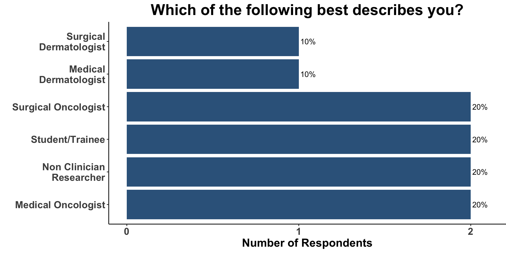
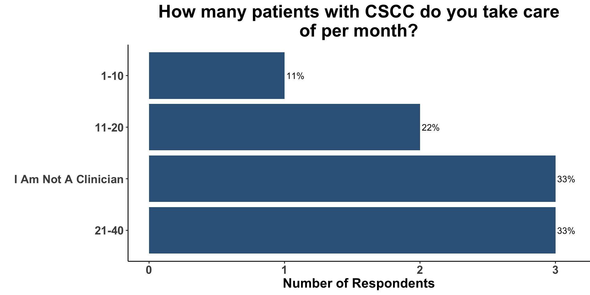
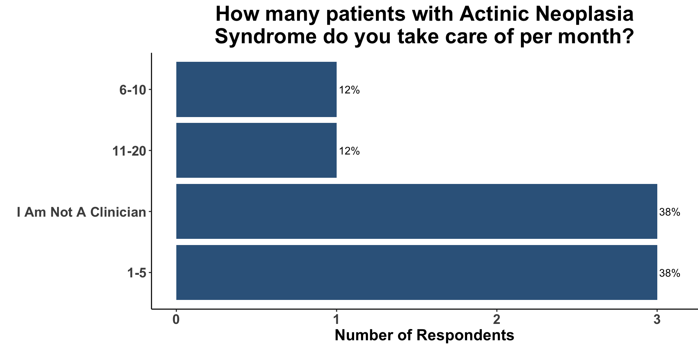
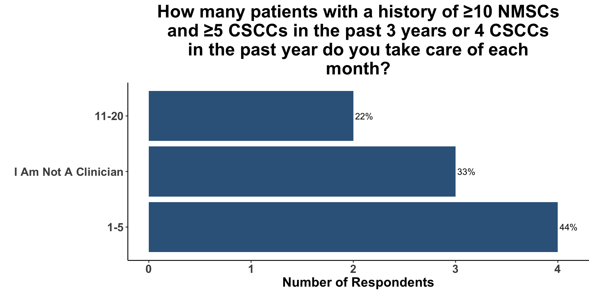
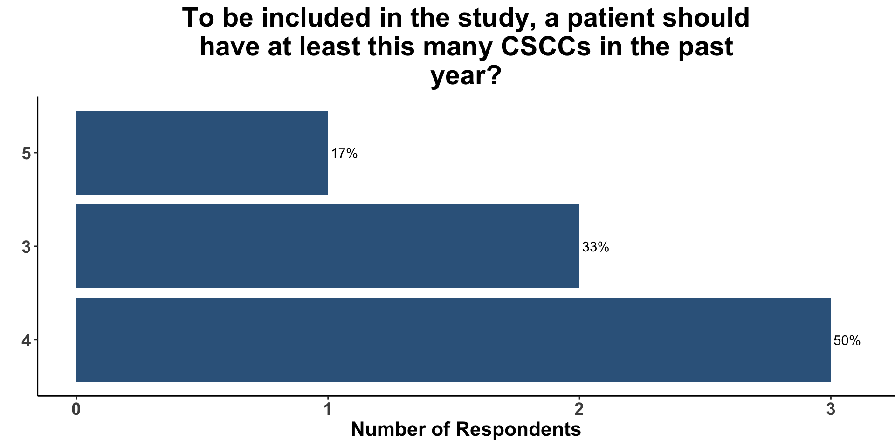
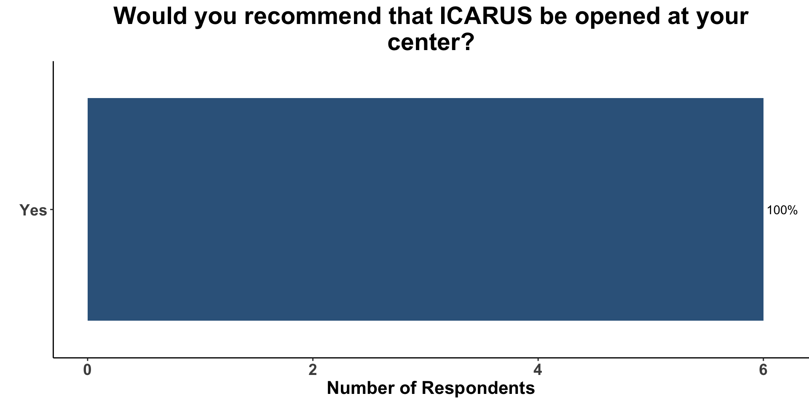
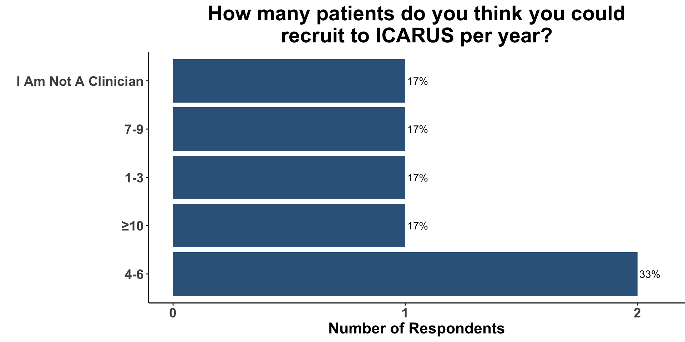

REDCap Survey
https://redcap.link/k77y3o9w




Total Sample Size: 254
Calculating sample size based on using a Negative Binomial Regression Model (using NBDesign Package).
Total Sample Size: 299
Calculating sample size based on using a Negative Binomial Regression Model (using NBDesign Package).
Total Sample Size: 348
Calculating sample size based on using a Negative Binomial Regression Model (using NBDesign Package).
Total Sample Size: 172
Calculating sample size based on using a Negative Binomial Regression Model (using NBDesign Package).
| ICI Characteristics | ||||
| Target | Drug | Half-life | Dose | Schedule |
|---|---|---|---|---|
| CTLA-4 | Ipilimumab | ~15 days | 3 mg/kg | q3 weeks |
| CTLA-4 | Ipilimumab | ~15 days | 10 mg/kg | q3 weeks |
| PD-1 | Nivolumab | ~25 days | 240 mg | q2 weeks |
| PD-1 | Nivolumab | ~25 days | 480 mg | q4 weeks |
| PD-1 | Pembrolizumab | ~25 days | 200 mg | q3 weeks |
| PD-1 | Pembrolizumab | ~25 days | 400 mg | q6 weeks |
| PD-1 | Cemiplimab | ~19 days | 350 mg | q3 weeks |
| PD-1 | Retinfanlimab | ~18 days | 500 mg | q4 weeks |
| PD-L1 | Avelumab | ~4 days | 800 mg | q2 weeks |
| PD-L1 | Atezolizumab | ~27 days | 840 mg | q2 weeks |
| PD-L1 | Atezolizumab | ~27 days | 1200 mg | q3 weeks |
| PD-L1 | Atezolizumab | ~27 days | 1680 mg | q4 weeks |
| PD-L1 | Durvalumab | ~18 days | 10 mg/kg | q2 weeks |
| PD-L1 | Durvalumab | ~18 days | 1500 mg | q4 weeks |
| Dose-Efficacy | ||||||
| Target | Drug | Indication | Dose | ORR (%) | PFS (% at 2 years) | G3-G4 toxicity (%) |
|---|---|---|---|---|---|---|
| CTLA-4 | Ipilimumab | Melanoma | 0.3 mg/kg Q3W | 0 | 2.7 | |
| CTLA-4 | Ipilimumab | Melanoma | 3 mg/kg Q3W | 4.2-19 | 12.9 | 15-27.3 |
| CTLA-4 | Ipilimumab | Melanoma | 10 mg/kg Q3W | 11.1-15 | 18.9 | 31-34 |
| PD-1 | Nivolumab | Melanoma | 0.1 mg/kg Q2W | 29-35 | 40-41 | 0-5 |
| PD-1 | Nivolumab | Melanoma | 0.3 mg/kg Q2W | 19-28 | 31-35 | 0-3 |
| PD-1 | Nivolumab | Melanoma | 1 mg/kg Q2W | 30-31 | 45-51 | 6-12 |
| PD-1 | Nivolumab | NSCLC | 1 mg/kg Q2W | 3-6 | 24-46 | 15.2 |
| PD-1 | Nivolumab | NSCLC | 3 mg/kg Q2W | 24-32 | 40-41 | 13.5 |
| PD-1 | Nivolumab | NSCLC | 10 mg/kg Q2W | 18-20 | 24-33 | 13.6 |
| PD-1 | Nivolumab | RCC | 0.3 mg/kg Q2W | 20 | 30 | 18.2 |
| PD-1 | Nivolumab | RCC | 1 mg/kg Q2W | 24-28 | 47-50 | 12 |
| PD-1 | Nivolumab | RCC | 2 mg/kg Q2W | 22 | 30 | 17 |
| PD-1 | Nivolumab | RCC | 10 mg/kg Q2W | 31 | 67 | 13 |
| PD-1 | Pembrolizumab | Melanoma | 2 mg/kg Q3W | 21-32.9 | 45 | 8-15 |
| PD-1 | Pembrolizumab | Melanoma | 10 mg/kg Q2W | 33.7-52 | 13.3-22.8 | |
| PD-1 | Pembrolizumab | Melanoma | 10 mg/kg Q3W | 26-35.9 | 37 | 3.6-15 |
| PD-1 | Pembrolizumab | NSCLC | 2 mg/kg Q3W | 15-25 | 13 | |
| PD-1 | Pembrolizumab | NSCLC | 10 mg/kg Q2W | 19.3-21 | 9 | |
| PD-1 | Pembrolizumab | NSCLC | 10 mg/kg Q3W | 19.2-25 | 9 | |
| Dose-Efficacy | ||||||
| Target | Drug | Indication | Dose | ORR (%) | PFS (% at 2 years) | G3-G4 toxicity (%) |
|---|---|---|---|---|---|---|
| CTLA-4 | Ipilimumab | Melanoma | 0.3 mg/kg Q3W | 0 | 2.7 | |
| CTLA-4 | Ipilimumab | Melanoma | 3 mg/kg Q3W | 4.2-19 | 12.9 | 15-27.3 |
| CTLA-4 | Ipilimumab | Melanoma | 10 mg/kg Q3W | 11.1-15 | 18.9 | 31-34 |
| PD-1 | Nivolumab | Melanoma | 0.1 mg/kg Q2W | 29-35 | 40-41 | 0-5 |
| PD-1 | Nivolumab | Melanoma | 0.3 mg/kg Q2W | 19-28 | 31-35 | 0-3 |
| PD-1 | Nivolumab | Melanoma | 1 mg/kg Q2W | 30-31 | 45-51 | 6-12 |
| PD-1 | Nivolumab | NSCLC | 1 mg/kg Q2W | 3-6 | 24-46 | 15.2 |
| PD-1 | Nivolumab | NSCLC | 3 mg/kg Q2W | 24-32 | 40-41 | 13.5 |
| PD-1 | Nivolumab | NSCLC | 10 mg/kg Q2W | 18-20 | 24-33 | 13.6 |
| PD-1 | Nivolumab | RCC | 0.3 mg/kg Q2W | 20 | 30 | 18.2 |
| PD-1 | Nivolumab | RCC | 1 mg/kg Q2W | 24-28 | 47-50 | 12 |
| PD-1 | Nivolumab | RCC | 2 mg/kg Q2W | 22 | 30 | 17 |
| PD-1 | Nivolumab | RCC | 10 mg/kg Q2W | 31 | 67 | 13 |
| PD-1 | Pembrolizumab | Melanoma | 2 mg/kg Q3W | 21-32.9 | 45 | 8-15 |
| PD-1 | Pembrolizumab | Melanoma | 10 mg/kg Q2W | 33.7-52 | 13.3-22.8 | |
| PD-1 | Pembrolizumab | Melanoma | 10 mg/kg Q3W | 26-35.9 | 37 | 3.6-15 |
| PD-1 | Pembrolizumab | NSCLC | 2 mg/kg Q3W | 15-25 | 13 | |
| PD-1 | Pembrolizumab | NSCLC | 10 mg/kg Q2W | 19.3-21 | 9 | |
| PD-1 | Pembrolizumab | NSCLC | 10 mg/kg Q3W | 19.2-25 | 9 | |


